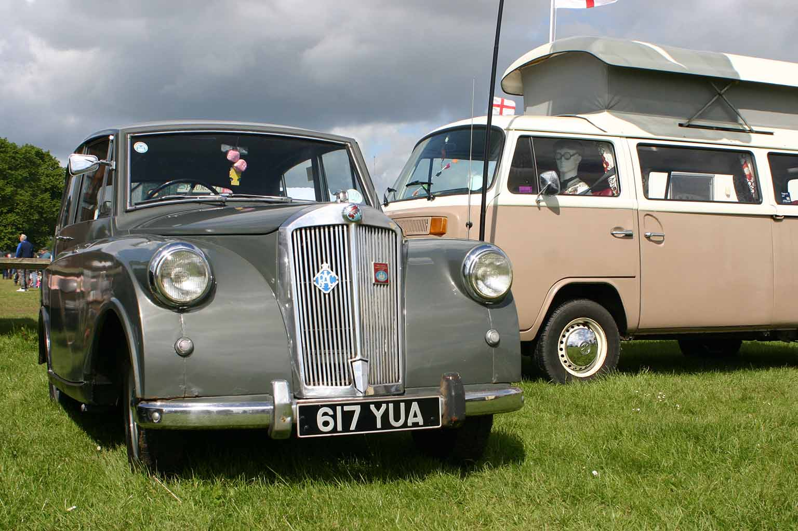
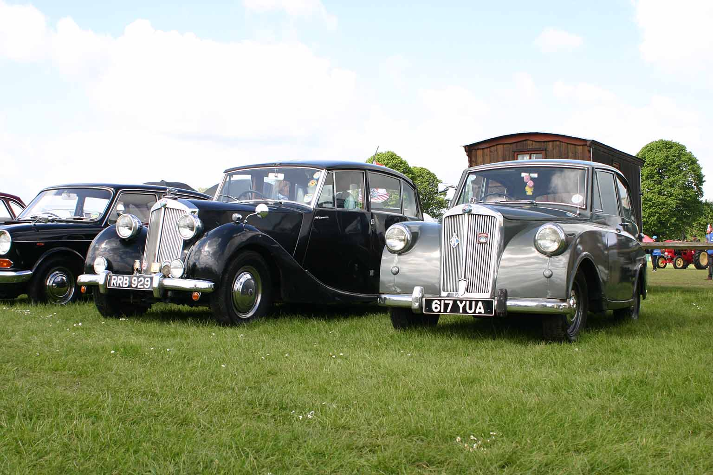
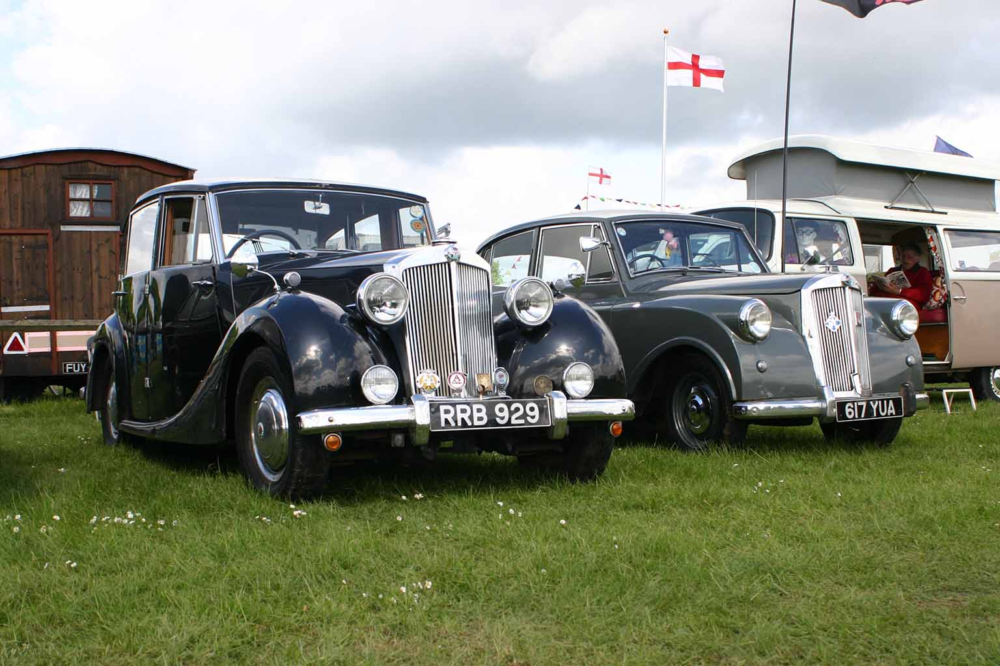

New Venue in Bidford-on-Avon
14th May 2017
Report by Chad Brown
Bidford-on-Avon, a little dwarfed in fame and size by its neighbour Stratford-on-Avon about ten miles down the road. An early May promising weekend and I was alerted to this vintage gathering through my association with the Midland Vehicle Preservation Society and clearly advance booking was requested.
So, in eager anticipation I applied at once listing my association with that worthy society and my fleet comprising of my 1935 Austin Lichfield and “Little Nell” my 1953 much travelled Triumph Mayflower.
This was a new venue and venture for me and Little Nell and I was disappointed to be informed that the entry list had been closed. Because it was a new location I appealed asking if they could possibly squeeze-in just one more historic classic just for the Sunday only as it was a two-day weekend event.
Fortunately, from the secretary of the show I was granted a pass which I was quite unable to print off using half a forest of paper to be convinced. So, set out armed with a copy of the letter from the show secretary and the run to the village was dry and pleasant enough after deciding Little Nell needed the publicity of a new venue.
So, together with my long-standing co-driver, photographer, friend and contributor to Flower Power, John Banks, off we went on our new adventure. Arriving at the village in good time we could see no signs, no other old vehicles and very few people.
Village location
So, we made for the church guessing that perhaps the event took place in the central village location. Calling in at the newsagents we were directed to pass over that narrow bridge across the Avon where we were met with a huge riverside location and big notices proclaiming a Steam Rally.
We were at once ushered through the entrance and directed towards the classic motor cars, dodging between the agricultural tractors, steam engines, etc., and into this huge area with some lovely vehicles with room enough to double those attending on this day.
When we got around to exploring, there were the most diverse and interesting standing displays of various related personal collections of railway and motoring interest. A little short of catering outlets I felt but we were able to get a bacon butty rewarding the time and patience it took to deliver, and later in the day we had some very welcome cheap chips.
Altogether it was a wonderful show and the constant sound of steam traction both huge and very modest added to the background atmosphere. Motorcycles as well as cars and tractors made a splendid diverse collection of interest and I had imagined it to be a very small village affair for the necessity of closing the entrant list.
And, yes, I was the only Triumph Mayflower but I spotted a Triumph Renown limousine version with the dividing glass partition owned by Dave, also a member of the Midlands Vehicle Preservation Society, who very kindly moved over to allow for our little sister to get in beside him.
I understand that having broken through this barrier I will in future be listed on their website, so roll on next year.